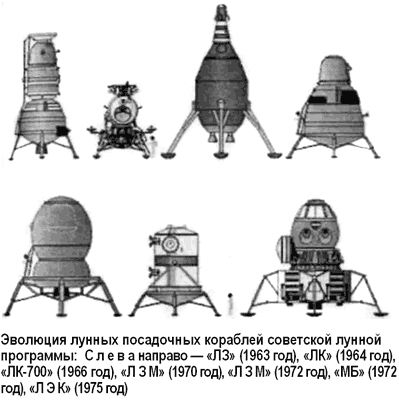

Программа «ЛЭК» Валентина Глушко
Крах советской лунной программы сказался и на карьере Василия Мишина.
В мае 1974 года он был освобожден от занимаемой должности главного конструктора ЦКБ экспериментального машиностроения. Само ЦКБЭМ было реорганизовано в Научно-производственное объединение «Энергия», руководить которым поставили Валентина Глушко.
В октябре 1974 года Глушко, избавившись от программы «ненавистной» ракеты «Н-1», предложил свой комплексный план работ НПО на ближайшие годы. При этом Валентин Петрович ставил перед своими сотрудниками более широкие задачи, чем кратковременное посещение Луны. Началось предэскизное проектирование новых тяжелых космических кораблей для лунных экспедиций, различных вариантов жилых комплексов и средств передвижения по Луне.
Основным транспортным средством, предлагаемым Глушко для доставки космонавтов и грузов, был лунный экспедиционный корабль «ЛЭК» прямой посадки.
«ЛЭК» должен был выводиться в космос колоссальным носителем «Вулкан». Новая ракета поражала своими характеристиками: стартовая масса — 3810 тонн, полная высота — 88 метров, основной диаметр — 7,8 метра. Она могла поднимать на низкую околоземную орбиту груз в 200 тонн, к Луне — 65 тонн, к Венере — 54 тонны, а к Марсу — 52 тонны.
Доставку «ЛЭК» на окололунную орбиту предполагали осуществить с помощью криогенного блока «Везувий» с кислородно-водородными ЖРД небольшой тяги, но высокого удельного импульса.
Сам «ЛЭК» создавался для выполнения экспедиции по чисто «прямой схеме» и состоял из трех блоков: посадочной и взлетной ступеней и обитаемого блока. Посадочная ступень, оснащенная мощным основным и четырьмя рулевыми ЖРД, по конфигурации напоминала восьмигранную посадочную ступень лунного модуля корабля «Аполлон». Обитаемый блок и взлетная ступень были похожи на аналогичные блоки «Н1-ЛЗМ».
В одном из вариантов экспедиции экипаж стартовал бы, находясь в спускаемом аппарате, расположенном внутри обитаемого блока «ЛЭК». Однако предлагалось запускать экипаж к беспилотному «ЛЭК» и с помощью отдельно выводимого на орбиту «Союза» с последующей стыковкой кораблей и переходом космонавтов в обитаемый блок лунного корабля. В остальном полет «ЛЭК» был стандартным для «прямой» схемы: старт с околоземной орбиты и выход на окололунную орбиту с помощью разгонного блока «Везувий», затем отделение «ЛЭК» от пустого блока и спуск на поверхность с помощью двигателей посадочной ступени. Далее, после выполнения программы экспедиции, взлетная ступень с помощью собственного двигателя должна была выводить обитаемый блок на траекторию полета к Земле. Перед входом в атмосферу — отделение спускаемого аппарата от обитаемого блока. Габариты «ЛЭК» были выбраны такими: полная длина — 9,7 метра, максимальный диаметр — 5,5 метра, полная масса — 31 тонна. Экипаж — 3 человека, максимальное время эксплуатации — 365 дней.

Руководство страны не испытывало никакого энтузиазма по поводу «новой» лунной программы и не торопилось выделять деньги для осуществления планов НПО «Энергия». Поставленная перед отечественной космонавтикой задача создания многоразового транспортного корабля отодвинула разработки по лунной тематике на второй план.
Глушко до самых последних дней своей жизни пытался убедить «верхи» в необходимости финансирования программы освоения Луны, но сделать ему этого так и не удалось, хотя разработка отдельных частей системы дошла уже до эскизного проектирования.